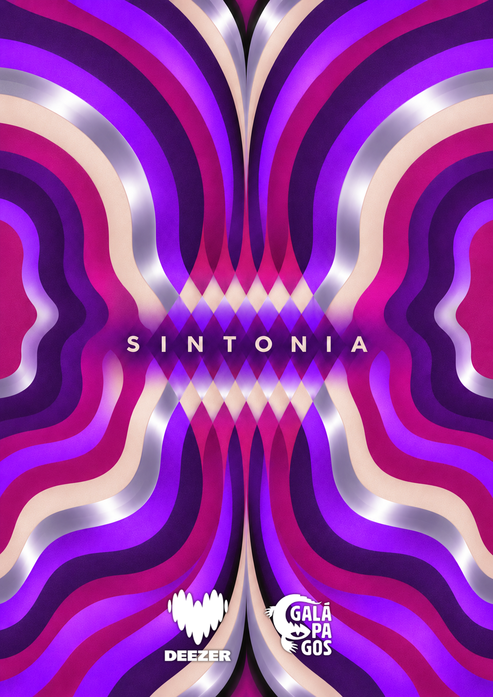

Na mesma
frequência.
As narrativas musicais podem causar várias interpretações, por vezes o público absorve uma mensagem que não foi a intenção do cantor. Dentro das narrativas dos seus artistas favoritos, qual foi moldada pela mídia e qual foi pensada pelo cantor?
Escolha sua edição
01 / 02EDIÇÃO 01
Universo pop.
Entre a voz do artista e o olhar do público,
onde essa história se encontra?
SÓ VOCÊ PODE VER
Uma história te espera.

Toque na carta para revelar a história
Depois de ler, conte a história ao grupo e usem o termômetro físico.
Caso tenha dúvidas, as regras estão no botão no canto superior direito.
Caso tenha dúvidas, as regras estão no botão no canto superior direito.